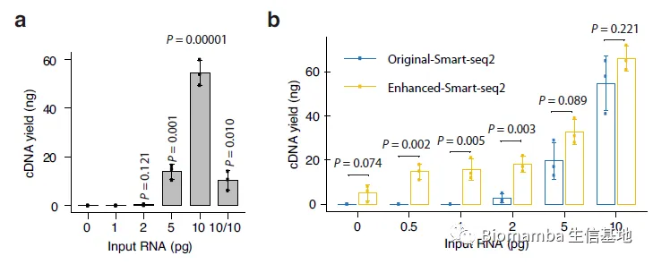
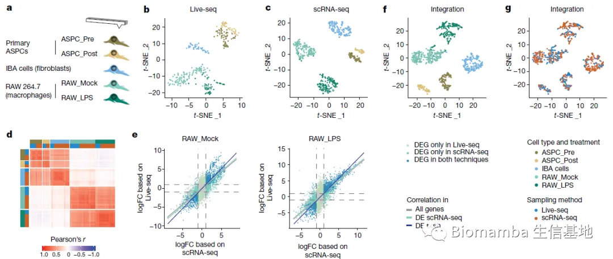
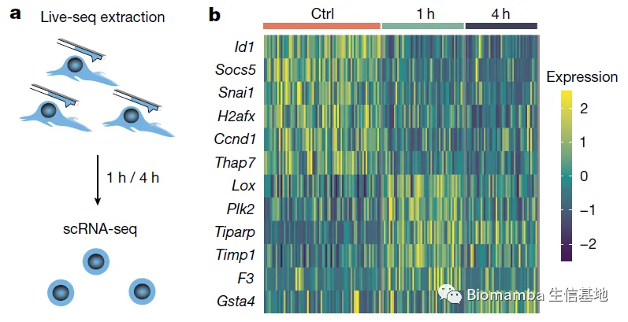
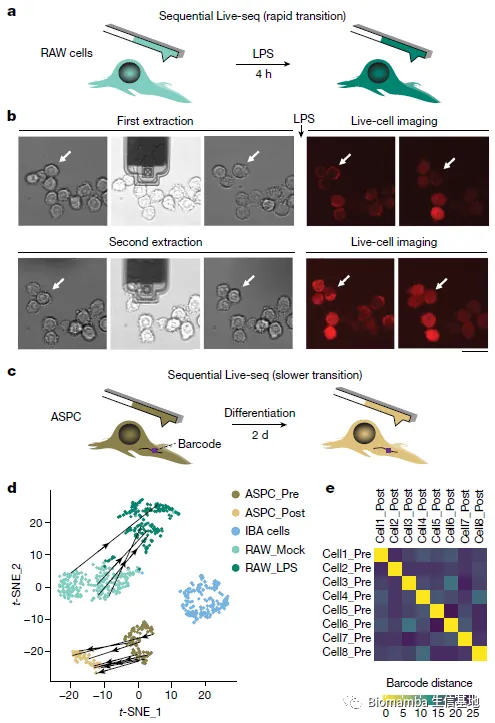

单细胞都能活检测序了？
原文：https://mp.weixin.qq.com/s?__biz=MzAwMzIzOTk5OQ==&mid=2247500846&idx=1&sn=d5e9782c0318e411771e746950f5b5f5&chksm=9b3cbd7eac4b3468ea93a5d6a28cfd05409660a532cc8df72ed9b58f30a76b0a8b6cec79934a#rd 合集：单细胞教程全收录 / 文献速递
Biomamba荐语
今天分享的是一篇2022年八月发表在 《Nature》上题为“Live-seq enables temporal transcriptomic recording of single cells”的文献，影响因子就不谈了，即使是《Nature》的影响因子也很有可能配不上这篇文章的贡献。初次标题就把我震惊到了，看来是我很久没有关注技术发展了，目前可以做到对单细胞进行活检，在不破坏并杀死细胞的情况下测得单细胞的转录组，这样可以保证后续持续跟踪细胞的生物学变化。恰好前段时间有幸听陈老师现场汇报了这个工作，拿出来再温习一下~
doi:
10.1038/s41586-022-05046-9
链接：
https://pubmed.ncbi.nlm.nih.gov/35978187/
摘要
-
单细胞转录组学(scRNA-seq)极大地提高了探索细胞异质性的能力。然而，scRNA-seq需要裂解细胞，这阻碍了对同一细胞进行进一步的分子或功能分析。
-
作者建立了Live-seq的全新方法，使用流体力显微镜在RNA提取过程中保持细胞活力，从而允许将细胞的基态转录组与下游分子或表型行为耦合。为了测试Live-seq，作者使用细胞生长、功能反应和全细胞转录组读出来证明Live-seq可以准确地对不同的细胞类型和状态进行分类，而不会引起细胞状态的波动。
-
通过连续地分析单个巨噬细胞在脂多糖(LPS)刺激前后的转录组，以及脂肪基质细胞在分化前后的转录组，证明live-seq有能力跟踪细胞的轨迹。此外，作者证明Live-seq可以作为转录组记录器，通过预先记录单个巨噬细胞的转录组，在LPS暴露后通过延时成像监测这些转录组变化。这使得基于它们影响巨噬细胞LPS响应异质性的能力，对基因进行无监督的全基因组排序成为可能，揭示了 Nfkbia 表达水平和细胞周期状态对细胞表型是决定性因素。
-
综上，Live-seq可以通过将scRNA-seq从一个时间点的研究转换为一个时间连续性分析方法来解决广泛的生物学问题。
背景介绍
-
细胞对内部或外部刺激的反应是不同的，要理解细胞的分子状态如何影响细胞对诸如炎症信号或分化刺激等的反应速度和程度具有挑战性。主要的障碍是大多数全基因组分析方法会破坏细胞，这使得后续的分子或表型实验无法在同一细胞上进行
-
近年来，为了避免破坏性采样，已经几种细胞分析方法被开发，可大致分为两类。首先，通过纯计算方法将根据快照测量推断细胞的过去状态，或通过将相似的细胞状态连接到连续的轨迹，或通过建模mRNA剪接动态。尽管这些工具生成的模型很有见地，但这只是统计建模出来的数据，而不是细胞的实际过渡路径。此外，这些技术是否能够在更长的时间尺度和个体基因水平上正确推断细胞过去的状态仍有争议。第二类方法将标记一个细胞或它的一些分子。例如，mRNA的代谢标记可以区分新合成的mRNA分子和旧的mRNA分子。也可以对细胞进行基因标记，然后对其子细胞进行独立的分子或表型分析。
-
尽管这些分子方法很强大，但它们通常只适用于很短的时间尺度或每个细胞的一些特征，并且依赖于几个生物学假设来推断细胞的初始状态。这些假设包括细胞和基因间的同质降解率，或在数代(细胞)间分子状态的维持，这些假设在单基因水平上可能不成立。
-
在这里，作者引入了Live-seq，一种使用细胞质活检在转录组分析后保持细胞存活的技术。该方法是基于流体力显微镜(FluidFM)在单细胞水平下将力控制与体积控制耦合在一起。通过优化FluidFM程序和低含量(low-input)的RNA测序(RNA-seq)方法和结合它们，我们发现高质量的细胞质mRNA可以从活的单细胞中提取，其数量与转录组分析相匹配。由于这一过程可以在保持细胞存活的情况下进行，因此可以直接将细胞的当前状态与其下游分子和表型特性相结合。我们演示了Live-seq如何可以用于执行相同细胞的顺序分子分析。此外，我们发现Live-seq可以作为一个转录组记录器，通过预先记录单个巨噬细胞的转录组，从而识别巨噬细胞脂多糖(LPS)响应异质性的基础因素，揭示基础Nfkbia表达水平和细胞周期状态作为重要的表型决定因素。
结果
-
我们简单的介绍一下研究结果
-
首先，作者对单细胞活检的方法做了以下优化：
-
(1)减少提取时间，(2)降低温度，(3)预加载带采样缓冲液的FluidFM探针，目的是立即将提取的细胞质液与RNase抑制剂混合，从而最大限度地减少细胞到试管中转移过程中样本RNA的降解和(已经是皮升量级的)样本的丢失，(4)将提取液释放到含有与下游RNA-seq兼容的缓冲液的微升液滴中;(5)实现基于图像的细胞跟踪以进行顺序提取。这些操作使得live-seq可以仅利用1pg的RNA建库。

- 为了评估细胞质mRNA活检(live-seq)是否可以作为完整(裂解)细胞转录组的合适代表，我们比较了Live-seq基因表达谱与使用全细胞Smart-seq2建库获得的基因表达谱矩阵。使用相同的细胞类型和处理组，我们用scRNA-seq对573个细胞进行了测序，其中554个细胞通过了应用于Live-seq样本的相同过滤标准。与Live-seq相比，每个细胞的平均基因数更高:8,328个基因，每个细胞的测序深度约为70,000个reads。虽然live-seq的敏感性略低，但是live-seq对于细胞类型的鉴别即使在不去批次的情况下一致性也非常之高。相同细胞类型在两种技术之间的表达矩阵也具有非常强烈的相关性。

- 最重要的是，live-seq并没有改变这些细胞的生物学状态、没有诱导特定基因的表达：

-
那么作者就可以通过live-seq构建连续的单细胞转录组图谱，
-
作者试图建立一种连续Live-seq采样方法，这将允许人们记录细胞状态转变前后的分子特征。为此，作者考虑了一个快速和较慢的细胞状态转变模型:分别对细胞外刺激(LPS)的响应和分化(脂肪形成)
-
对于前一个模型，第一次采样24个RAW细胞，然后用LPS刺激它们，之后第二次采样相同的细胞。此外，在两个采样事件之后，也用延时显微镜对各自的细胞进行监测。这些努力产生了4个连续的探针细胞，反映了通过转录组质量控制截断标准(方法)的样本比例相对适中(每次提取约40%)。为了验证各自的基因表达谱是否正确地显示了从基础状态到lps刺激状态的转变，作者将Live-seq序列采样信息投影在图2f、g所示的Live-seq和scRNA-seq综合数据之上。最终发现，按顺序采样的细胞，每一个在相同的t分布随机邻居嵌入(t-SNE)图中构成两个不同的点，正确地映射到各自的细胞状态簇，提供了细胞轨迹的直接的、转录组范围的读取。

- 总之，作者多方面验证自己live-seq的可靠性并通过阐明巨噬细胞受到LPS刺激的前后差异加以佐证，本推送只为做一个快讯，感兴趣的同学可以详细读一下原文(Figure、extended Figure和supplemental Figure共几十张)。

如何联系我们
 公众号后台消息更新不及时，超过48h便不允许回复读者消息，这里给大家留一下领取资料、免费服务器(有root权限的共享服务器,注册即送200￥)的微信号 ，方便各位随时交流、提建议(科研任务繁重，回复不及时请见谅)。此外呼声一直很高的交流群 也建好了，欢迎大家入群讨论：永久免费的千人生信、科研交流群
公众号后台消息更新不及时，超过48h便不允许回复读者消息，这里给大家留一下领取资料、免费服务器(有root权限的共享服务器,注册即送200￥)的微信号 ，方便各位随时交流、提建议(科研任务繁重，回复不及时请见谅)。此外呼声一直很高的交流群 也建好了，欢迎大家入群讨论：永久免费的千人生信、科研交流群
大家可以阅读完这几篇之后添加给生信入门初学者的小贴士 如何搜索公众号过往发布内容

 您点的每个赞和在看，我都认真当成了喜欢
您点的每个赞和在看，我都认真当成了喜欢